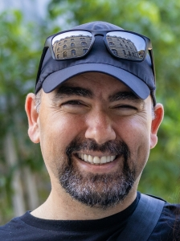

Prof. Dr. Ali EmrePusane
Elektrik-Elektronik Mühendisliği BölümüBoğaziçi ÜniversitesiBebek, İstanbul

Biyografi
Ali Pusane, Elektronik ve Haberleşme Mühendisliği alanındaki lisans ve yüksek lisans derecelerini 1999 ve 2002 yıllarında İstanbul Teknik Üniversitesi'nden aldı. Ardından gittiği University of Notre Dame'de Elektrik Mühendisliği alanında yüksek lisans (2004), Uygulamalı Matematik alanında ikinci bir yüksek lisans (2006) ve Elektrik Mühendisliği alanında doktora (2008) derecelerini tamamladı. 2009 yılında Boğaziçi Üniversitesi Elektrik-Elektronik Mühendisliği Bölümü'ne katıldı.
Ders verme ve araştırma çalışmalarının yanı sıra ulusal ve uluslararası Ar-Ge şirketlerine ve kamu kurumlarına danışmanlık yapmaktadır. Uzmanlık alanları dalga biçimi tasarımı, fiziksel katman prototiplemesi, makine öğrenmesi destekli sinyal analizi, sinyal konumlandırma, radar sinyal işleme ve ileri hata düzeltme (FEC) kodlayıcı ve kod çözücüleri için düşük karmaşıklıklı gömülü tasarımları kapsamaktadır. Boğaziçi Üniversitesi Sinyal Analizi Araştırma Grubu'nu (BUSARG) yönetmektedir.
IEEE Kıdemli Üyesi olan Pusane, pek çok IEEE dergisi ve konferansında hakemlik yapmış, IEEE Transactions on Communications dergisinde yardımcı editör olarak görev almıştır.
İş dışında Minecraft, Roblox, Fortnite ve Brawl Stars ile gereksiz ama kayda değer bir geçmişi vardır; bugünlerde ise sıkı bir COD: Mobile oyuncusudur. Ayrıca Su Doku ve Killer Su Doku tutkunudur; ki bu bulmacalar, doğrusal blok kodlarının silinme kanalı üzerinde graf tabanlı çözümüne şaşırtıcı derecede benzer. Koşuya gönül vermiş biri olarak bugüne kadar dört maraton bitirmiştir; en sonuncusu 2024'teki Valencia Maratonu'dur.
Eğitim
- 2008Doktora, Elektrik MühendisliğiUniversity of Notre Dame, Notre Dame, IN, ABD · danışman Daniel J. Costello, Jr.
- 2006Yüksek Lisans, Uygulamalı MatematikUniversity of Notre Dame, Notre Dame, IN, ABD
- 2004Yüksek Lisans, Elektrik MühendisliğiUniversity of Notre Dame, Notre Dame, IN, ABD
- 2002Yüksek Lisans, Elektronik ve Haberleşme Mühendisliğiİstanbul Teknik Üniversitesi, İstanbul
- 1999Lisans, Elektronik ve Haberleşme Mühendisliğiİstanbul Teknik Üniversitesi, İstanbul
Bu sitede
Araştırma alanları ve projeler
Moleküler haberleşme ve görünür ışık haberleşmesi, kanal kodlaması, fiziksel katman güvenliği, makine öğrenmesi destekli sinyal analizi ve radar.
↗Dergi ve konferans makaleleri
Yıllara göre sıralı; yayın türüne ve konuya göre filtrelenebilir, DOI ve Google Scholar bağlantılarıyla.
↗Dersler
Boğaziçi Üniversitesi'nde ve University of Notre Dame'de verilen dersler ve öğrenci değerlendirmeleri.
↗Öğrenciler ve mezunlar
Hâlihazırdaki doktora ve yüksek lisans öğrencileri ile danışmanlığı yapılan lisansüstü tezler.
↗Akademik soy ağacı
Massey, Fano, Klein ve Euler'e kadar uzanan bir akademik aile ağacı.
↗Maratonlar ve fotoğrafçılık
İstanbul, Mersin, Stockholm ve Valencia maratonları ile birkaç fotoğraf albümü.
Mesleki faaliyetler ve ödüller
Başkan Yardımcısı, Marie Skłodowska-Curie Actions Postdoctoral Fellowships (MSCA PF) 2026 çağrısı, Horizon Europe
Editörlük
- Yardımcı Editör, IEEE Transactions on Communications2020–2024
- Yardımcı Editör, Frontiers in Communications and Networks2020–2025
- Yardımcı Editör, International Journal of Information and Coding Theory (Inderscience)2011–2014
- Önde gelen IEEE konferanslarında teknik program komitesi (TPC) üyeliği; alanın başlıca dergilerinde hakemlikdevam ediyor
Araştırma değerlendirme
- Bağımsız Uzman, Raportör ve Başkan Yardımcısı, AB Horizon 2020 / Horizon Europe programları2014–günümüz
- Bağımsız Uzman, AB Eurostars programı2015–günümüz
- Bağımsız Uzman, Innovation Fund Denmark2015–günümüz
- Bağımsız Uzman ve Raportör, AB Yedinci Çerçeve Programı (FP7)2013
- Teknoparklar için proje değerlendiriciliği: İTÜ ARI Teknokent, Boğaziçi Üniversitesi Teknopark, BÜDOTEK Teknopark, Entertech İstanbul Teknokent ve KHAS Teknoparkdevam ediyor
Üniversite içi görevler
- Bölüm Başkan Yardımcısı, Elektrik-Elektronik Mühendisliği Bölümü, Boğaziçi Üniversitesi2012–13, 2024–26
- Üye, Fakülte Kurulu, Mühendislik Fakültesi, Boğaziçi Üniversitesi2018–2020
- Üye, Fakülte Yönetim Kurulu, Mühendislik Fakültesi, Boğaziçi Üniversitesi2012–2014
Ödüller
- Mühendislik Fakültesi Öğretimde Mükemmellik Ödülü, Boğaziçi Üniversitesi2010–15, 2019, 2021–25
- Lisansüstü Bursu, Center for Applied Mathematics, University of Notre Dame2004, 2006–07
- Werner von Siemens Mükemmellik Ödülü, İstanbul Teknik Üniversitesi2002
- En İyi Öğrenci Bildirisi Ödülü, 10. IEEE Sinyal İşleme ve İletişim Uygulamaları Kurultayı (SİU)2002